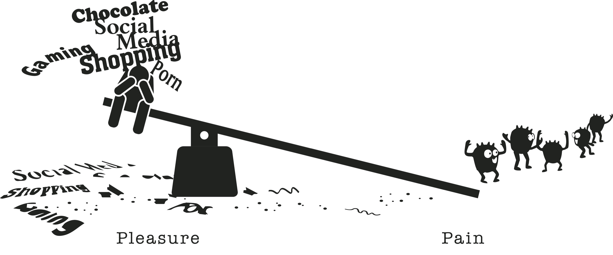

Chương 6 — Một cán cân bị gãy?
CHƯƠNG 6
Một Cán Cân Bị Hỏng?
“Tôi hy vọng,” Chris nói, ngồi trong văn phòng của tôi, chỉnh lại chiếc ba lô, hất lọn tóc rũ xuống mắt, chân rung liên hồi (qua nhiều năm sau đó tôi mới biết cậu luôn trong trạng thái không ngừng chuyển động), “rằng bác sĩ sẽ tiếp tục kê đơn buprenorphine cho tôi. Thuốc rất có ích. Thực ra nói thế vẫn là nhẹ. Tôi không chắc mình còn sống được đến giờ nếu không có nó, và tôi cần tìm một người có thể kê đơn cho mình.”
Buprenorphine là một loại opioid bán tổng hợp có nguồn gốc từ thebaine, được chưng cất từ cây thuốc phiện. Giống như các opioid khác, buprenorphine gắn vào thụ thể μ-opioid, mang lại sự giảm đau và giảm cơn thèm opioid ngay lập tức. Nói một cách đơn giản nhất, nó hoạt động bằng cách đưa cán cân khoái lạc – đau đớn trở lại vị trí thăng bằng, để một người như Chris có thể ngừng vật lộn với cơn thèm thuốc và quay trở lại sống cuộc đời mình. Bằng chứng khoa học rất vững chắc rằng buprenorphine làm giảm việc sử dụng opioid bất hợp pháp, giảm nguy cơ quá liều và cải thiện chất lượng cuộc sống.
Nhưng không thể lờ đi sự thật rằng buprenorphine là một loại opioid có thể bị lạm dụng, tuồn ra ngoài và bán trên đường phố. Đối với những người không lệ thuộc vào các loại opioid mạnh hơn, buprenorphine có thể tạo ra cảm giác phê sảng khoái. Những người đang dùng buprenorphine sẽ trải qua hội chứng cai và cơn thèm opioid khi ngừng hoặc giảm liều. Thực tế, tôi từng có một số bệnh nhân kể rằng hội chứng cai từ buprenorphine còn tệ hơn nhiều so với bất cứ thứ gì họ từng trải qua với heroin hay OxyContin.
“Sao cậu không kể cho tôi nghe câu chuyện của cậu đi,” tôi nói với Chris, “rồi sau đó tôi sẽ cho cậu biết suy nghĩ của mình.”
Chris đến Đại học Stanford vào năm 2003. Cha dượng lái xe đưa cậu từ Arkansas lên trên chiếc Chevy Suburban cũ mượn được. Chiếc SUV chất đầy đồ đạc của Chris trông lạc lõng giữa những chiếc BMW và Lexus bóng loáng đậu chật kín lối vào khu ký túc xá sinh viên.
Chris không lãng phí thời gian. Cậu sắp xếp phòng ký túc xá với độ chính xác tỉ mỉ, bắt đầu từ bộ sưu tập đĩa CD được xếp theo thứ tự bảng chữ cái. Cậu nghiên cứu danh mục môn học và chọn viết sáng tạo, triết học Hy Lạp, và Thần thoại và Hiện đại trong Văn hóa Đức. Cậu mơ ước trở thành nhà soạn nhạc, đạo diễn phim, nhà văn. Kế hoạch của cậu, cũng giống như bạn bè đồng trang lứa, thật vĩ đại. Đây sẽ là khởi đầu rực rỡ của cậu tại Stanford.
Khi các lớp học bắt đầu, Chris học tốt theo mọi tiêu chuẩn thông thường. Cậu học hành chăm chỉ. Cậu đạt điểm số xuất sắc. Nhưng ở một khía cạnh khác, cậu không hề phát triển tốt: cậu đi học một mình, tự học trong phòng hoặc thư viện một mình, chơi piano trong phòng sinh hoạt chung của ký túc xá một mình. Từ khóa được yêu thích nhất trong khuôn viên trường, cộng đồng, cứ lẩn tránh cậu mãi.
Hầu hết chúng ta khi nhìn lại những ngày đầu đại học đều nhớ cảm giác chật vật tìm kiếm nhóm bạn thuộc về mình. Chris chật vật hơn thế nhiều. Ngay cả bây giờ vẫn khó nói chính xác tại sao. Cậu là một chàng trai khôi ngô. Sâu sắc. Dễ mến. Nhiệt tình làm vừa lòng người khác. Có lẽ điều đó phần nào liên quan đến việc cậu là cậu nhóc nghèo đến từ Arkansas.
Cuộc sống đơn độc nơi giảng đường của Chris kéo dài sang năm thứ hai cho đến khi cậu gặp một cô gái tại chỗ làm thêm trong trường. Những đường nét góc cạnh, mái tóc nâu mềm và thân hình mảnh khảnh nhưng săn chắc của cậu vốn luôn thu hút sự chú ý. Cậu và cô gái, một sinh viên đại học khác, đã hôn nhau, và Chris lập tức rơi vào lưới tình. Khi cô nói rằng mình đã có bạn trai, cậu quyết định điều đó chẳng quan trọng. Cậu muốn ở bên cô, và liên tục tìm gặp cô. Khi cậu không chịu bỏ cuộc, cô buộc tội cậu rình rập mình và báo cáo lên người quản lý chung của cả hai. Kết quả là cậu mất việc và bị ban giám hiệu nhà trường khiển trách. Không việc làm cũng chẳng có bạn gái, cậu quyết định chỉ còn một giải pháp duy nhất: Cậu sẽ tự sát.
Chris viết một bức e-mail vĩnh biệt gửi cho mẹ: “Mẹ ơi, con đã mặc đồ lót sạch.” Cậu mượn một con dao, mang theo máy nghe đĩa CD cùng một chiếc đĩa được chọn lọc kỹ lưỡng, rồi đi ra cánh đồng Roble Field. Lúc đó là chạng vạng, và kế hoạch của cậu là nuốt một lọ thuốc, rạch cổ tay và canh thời điểm cái chết trùng với lúc mặt trời lặn.
Âm nhạc rất quan trọng với Chris, và cậu chọn bài hát cuối cùng đầy dụng công: “PDA” của Interpol, một ban nhạc indie post-punk revival đến từ New York. “PDA” có tiết tấu dồn dập và mạnh mẽ. Phần lời khá khó nghe rõ. Khổ cuối cùng hát như sau: “Ngủ đêm nay, ngủ đêm nay, ngủ đêm nay, ngủ đêm nay. Có điều để nói, có việc để làm, chẳng có gì để nói, chẳng có gì để làm.” Chris đợi cho đến tận nốt nhạc cuối cùng của bài hát, rồi kéo lưỡi dao sắc bén qua từng bên cổ tay.
Cố gắng tự sát bằng cách rạch cổ tay giữa một cánh đồng trống hóa ra không phải là chiến lược hiệu quả lắm. Nửa giờ sau, máu trên cổ tay cậu đã đông lại, và cậu ngồi đó trong bóng tối, nhìn mọi người đi ngang qua. Cậu quay về phòng ký túc xá, tự móc họng nôn hết số thuốc đã uống và gọi 911. Nhân viên cấp cứu đến và đưa cậu tới Bệnh viện Stanford, nơi cậu được nhập vào khoa tâm thần.
Cha dượng là người đầu tiên đến thăm cậu. Mẹ cậu cũng định đi nhưng không thể bước lên máy bay. Bà mắc chứng sợ đi máy bay từ lâu. Cha ruột của cậu, người mà cậu chỉ gặp vài lần mỗi năm, cũng có mặt. Ông trông bàng hoàng khi nhìn thấy những vết rạch đỏ ửng, sưng tấy trên cổ tay Christopher.
Chris ở lại khoa tâm thần tổng cộng hai tuần. Trong thời gian đó, cậu chủ yếu cảm thấy nhẹ nhõm khi được ở trong một môi trường khép kín, được kiểm soát và dễ đoán định.
Một đại diện từ Đại học Stanford đến thăm cậu tại khoa và thông báo rằng, trong hoàn cảnh này, cậu buộc phải nghỉ học vì lý do y tế, cho đến khi hồi phục đủ để có thể quay lại, tùy theo đánh giá và quyết định của nhà trường.
Chris quay về Arkansas sống cùng mẹ và cha dượng. Cậu xin được một công việc phục vụ bàn. Cậu khám phá ra ma túy.
Vào mùa thu năm 2007, Chris quay lại Stanford. Trước khi có thể đăng ký cho học kỳ mùa thu, cậu cần gặp trưởng bộ phận sức khỏe tâm thần sinh viên và trưởng khoa quản lý nội trú để cập nhật tiến triển của bản thân và trình bày lý do thuyết phục xin nhập học lại.
Một ngày trước buổi gặp, cậu ở nhờ nhà một cô gái cậu từng quen ở Stanford. Cậu không quen cô thân lắm, nhưng cô cũng là người “có nhiều bất ổn”, nên Chris thấy thoải mái hơn khi xin ngủ nhờ nhà cô một hai đêm trong lúc thu xếp ổn thỏa với trường đại học.
Đêm trước buổi phỏng vấn, Chris thức trắng “hít cocaine” và đọc cuốn Nền văn minh và những bất mãn của nó (Civilization and Its Discontents) của Freud. Đến sáng, cậu kết luận mình quá tàn tạ để có thể gặp gỡ ban quản trị nhà trường. Cậu bay về nhà ngay trong ngày hôm đó.
Chris dành cả năm tiếp theo để xúc đất, rải lớp phủ hữu cơ và cắt cỏ dưới cái nắng trên 100 độ F cho Đại học Arkansas. Cậu thích tính chất nặng nhọc của công việc đó, cách mà việc vận động cơ thể giúp cậu phân tâm khỏi những suy nghĩ của mình. Cậu được thăng chức làm thợ chăm sóc cây, công việc chủ yếu là đẩy thân cây và cành cây vào máy nghiền gỗ.
Khi không làm việc, cậu sáng tác nhạc, hết bản phối này đến bản phối khác, trong khi hút cần sa—thứ đã trở nên không thể thiếu đối với cậu.
Chris lại quay về Stanford vào mùa thu năm sau. Lần này không yêu cầu gặp mặt trực tiếp. Chris xuất hiện tại ký túc xá theo phong cách Jack Reacher, chẳng mang gì ngoài bàn chải đánh răng trong túi và chiếc máy tính xách tay trên tay. Cậu mặc nguyên quần áo ngủ trên tấm nệm trần, không có ga trải giường.
Cậu tự ép mình phải sống có kỷ luật, điều mà cậu nhận ra mình cần để thành công. Là một phần của tư duy mới, cậu đổi chuyên ngành. Giờ cậu sẽ học hóa học.
Cậu cũng thề sẽ bỏ hút cần sa, nhưng quyết tâm của cậu chỉ trụ được ba ngày trước khi cậu quay lại hút hằng ngày, trốn trong phòng, cố canh lúc bạn cùng phòng—người mà cậu chỉ nhớ mang máng là “anh chàng người Ấn Độ nào đó”—không có mặt.
Đến kỳ thi giữa kỳ, Chris lập luận rằng vì phần lớn thời gian ôn thi cậu đều đang phê, nên cậu cũng nên phê khi đi thi giữa kỳ. Cậu nhớ mang máng điều gì đó về “học tập phụ thuộc trạng thái” (state-dependent learning) từng đọc trong lớp tâm lý học. Cậu làm đến câu hỏi thứ hai thì nhận ra mình chẳng biết gì về kiến thức bài thi và không thể hoàn thành nổi. Cậu đứng dậy bước ra ngoài, ném bài thi vào thùng rác trên đường đi.
Ngày hôm sau cậu đã ngồi trên máy bay về nhà.
Lần rời Stanford thứ ba mang lại cho Chris một cảm giác rất khác. Nó nhuốm màu tuyệt vọng. Khi về nhà, cậu không còn chút tham vọng nào nữa, thậm chí chẳng buồn tiếp tục sáng tác nhạc. Cậu bắt đầu uống rượu nặng, bên cạnh việc hút cần sa. Rồi cậu thử opioid lần đầu tiên—một điều quá dễ dàng ở Arkansas vào năm 2009, khi các nhà sản xuất và phân phối opioid đang bơm hàng triệu viên thuốc giảm đau opioid vào bang này. Trong cùng năm đó, các bác sĩ ở Arkansas đã kê 116 đơn thuốc opioid trên mỗi 100 người dân sinh sống tại bang.
Khi dùng opioid, mọi thứ Chris nghĩ mình đang tìm kiếm bỗng dưng như nằm ngay trong tầm tay. Đúng là cậu cảm thấy hưng phấn, nhưng đó không phải chìa khóa. Chìa khóa là cậu cảm thấy được kết nối.
Cậu bắt đầu gọi điện cho họ hàng và những người quen biết, trò chuyện, chia sẻ, tâm sự. Những kết nối ấy có vẻ chân thật chừng nào cậu còn đang ngấm thuốc nhưng biến mất ngay khi opioid hết tác dụng. Sự thân mật được tạo ra bằng thuốc, cậu nhận ra, không hề bền lâu.
Một thói quen sử dụng opioid ngắt quãng tiếp tục theo chân Chris trong lần nỗ lực nhập học Stanford tiếp theo. Khi cậu quay lại vào mùa thu năm 2009, lúc này là lần thử thứ tư, cậu bị tách biệt cả về tuổi tác lẫn không gian sống so với các bạn sinh viên đại học. Cậu lớn hơn sinh viên năm hai trung bình tới năm tuổi.
Cậu được xếp vào khu nhà ở dành cho nghiên cứu sinh cao học, nơi cậu ở chung căn hộ hai phòng ngủ với một nghiên cứu sinh ngành vật lý hạt. Họ có rất ít điểm chung và cố gắng hết sức để tránh chạm mặt nhau.
Cậu hình thành một lịch trình sinh hoạt xoay quanh việc học và dùng ma túy. Cậu đã từ bỏ ý định cố gắng cai nghiện. Cậu bắt đầu tự coi mình là một “con nghiện ma túy” chính hiệu.
Cậu hút cần sa một mình trong phòng ngủ mỗi ngày. Mỗi tối thứ Sáu cậu lại lên San Francisco, một mình, để mua heroin. Một mũi tiêm trên đường phố tốn của cậu mười lăm đô la, đổi lại một cơn phê dâng trào kéo dài năm đến mười lăm giây, và dư âm êm dịu kéo dài nhiều giờ. Cậu hút thêm cần sa để làm dịu cảm giác tụt dốc khi hết thuốc. Giữa học kỳ đầu tiên, cậu bán chiếc máy tính xách tay để mua thêm heroin. Sau đó cậu bán luôn cả áo khoác. Cậu nhớ cảm giác lạnh cóng khi lang thang trên các con phố của thành phố.
Có lần cậu thử kết bạn với hai sinh viên người Anh trong lớp ngoại ngữ. Cậu nói với họ rằng cậu muốn làm một bộ phim, có họ đóng trong đó. Cậu bắt đầu có hứng thú với nhiếp ảnh và thỉnh thoảng lang thang khắp khuôn viên trường chụp ảnh. Ban đầu họ có vẻ thích thú, nhưng khi cậu kể ý tưởng cho bộ phim—quay cảnh họ nói giọng Mỹ trong lúc đang ăn—họ thoái thác và từ đó tránh mặt cậu luôn.
“Chắc tôi lúc nào cũng kỳ quặc như thế. Những ý tưởng kỳ quặc. Đó là lý do tôi chẳng bao giờ muốn nói cho người khác biết mình đang nghĩ gì.”
Xuyên suốt tất cả chuyện đó, Chris vẫn đi học và toàn đạt điểm A, ngoại trừ một điểm B ở môn Cơ sở Liên nhân của Hành vi Bất thường. Cậu về nhà vào dịp Giáng sinh và không quay lại nữa.
Vào mùa thu năm 2010, Chris thực hiện một nỗ lực nửa vời cuối cùng để nhập học lại tại Stanford. Cậu thuê một căn phòng ngoài khuôn viên trường ở Menlo Park và lại đăng ký thêm một chuyên ngành mới nữa: sinh học người. Chỉ vài ngày sau, cậu ăn trộm thuốc giảm đau của bà chủ nhà và xin được đơn thuốc Ambien, thứ mà cậu nghiền nát rồi tự tiêm vào người. Cậu trụ được năm tháng khốn khổ, rồi rời Stanford, lần này không còn chút hy vọng nào sẽ quay lại nữa.
Trở về nhà ở Arkansas, Chris dành cả ngày để phê thuốc. Cậu tự tiêm vào buổi sáng, và khi thuốc hết tác dụng vài giờ sau đó, cậu nằm trên giường trong nhà bố mẹ, mong thời gian trôi nhanh qua. Vòng lặp ấy dường như vô tận và không lối thoát.
Vào mùa xuân năm 2011, Chris bị cảnh sát bắt vì ăn trộm kem khi đang say xỉn. Cậu được chọn giữa vào tù hoặc đi trại cai nghiện. Cậu chọn đi cai nghiện. Vào ngày 1 tháng 4 năm 2011, tại trại cai nghiện, Chris được bắt đầu điều trị bằng một loại thuốc gọi là buprenorphine, thường được biết đến hơn với tên thương mại là Suboxone. Chris ghi nhận buprenorphine đã cứu mạng mình.
Sau hai năm ổn định với buprenorphine, Chris quyết định thực hiện nỗ lực cuối cùng để quay lại Stanford. Năm 2013 cậu thuê một chiếc giường trong ngôi nhà di động của một ông lão người Hoa. Cậu không đủ tiền thuê chỗ nào khác. Trong tháng đầu tiên ở trường, cậu tìm đến tôi để nhờ giúp đỡ.
Tất nhiên, tôi đồng ý kê đơn buprenorphine cho Chris.
Ba năm sau cậu tốt nghiệp loại xuất sắc và học tiếp lên tiến sĩ. Những ý tưởng “kỳ quặc” của cậu, hóa ra, lại rất phù hợp với phòng thí nghiệm.
Năm 2017, cậu kết hôn với bạn gái. Cô biết về quá khứ của cậu và hiểu tại sao cậu phải dùng buprenorphine. Đôi khi cô than phiền về sự “thiếu cảm xúc như người máy” của cậu, đặc biệt là việc cậu dường như chẳng hề tức giận ngay cả khi cô thấy đáng lẽ phải giận.
Nhưng về cơ bản, cuộc sống rất tốt đẹp. Chris không còn bị choáng ngợp bởi cơn thèm thuốc, cơn thịnh nộ và những cảm xúc không thể chịu đựng nổi khác. Cậu dành cả ngày trong phòng thí nghiệm và vội vã về nhà sau giờ làm để gặp vợ. Họ sắp sửa đón đứa con đầu lòng.
Một ngày năm 2019, tôi nói với Chris trong một buổi hẹn hằng tháng của chúng tôi: “Cậu đang làm rất tốt, và đã duy trì được lâu như vậy rồi, cậu có nghĩ đến việc thử cai buprenorphine chưa?”
Câu trả lời của cậu rất dứt khoát. “Tôi không bao giờ muốn bỏ buprenorphine. Nó giống như một chiếc công tắc bật sáng đối với tôi. Nó không chỉ ngăn tôi quay lại với heroin. Nó mang lại cho cơ thể tôi thứ mà tôi cần nhưng không thể tìm thấy ở bất kỳ đâu khác.”
Thuốc để Khôi phục Cán cân Thăng bằng?
Tôi thường xuyên suy nghĩ về điều Chris nói ngày hôm đó, về việc buprenorphine mang lại cho cậu thứ mà cậu không thể tìm thấy ở bất kỳ đâu khác.
Liệu việc sử dụng ma túy kéo dài đã làm hỏng cán cân khoái lạc – đau đớn của cậu đến mức cậu sẽ cần opioid suốt phần đời còn lại chỉ để cảm thấy “bình thường”? Có lẽ não bộ của một số người mất đi tính khả biến cần thiết để khôi phục cân bằng nội môi, ngay cả sau khi kiêng cữ kéo dài. Có lẽ ngay cả sau khi những con quỷ nhỏ đã bước xuống, cán cân của họ vẫn vĩnh viễn nghiêng nặng về phía đau đớn.

Hay Chris đang nói rằng opioid đã điều chỉnh một sự mất cân bằng hóa học bẩm sinh trong cậu?
Khi tôi học trường y và nội trú vào những năm 1990, tôi được dạy rằng những người bị trầm cảm, lo âu, thiếu tập trung, méo mó nhận thức, rối loạn giấc ngủ, vân vân, có bộ não không hoạt động theo cách bình thường, giống như người bị tiểu đường có tuyến tụy không tiết đủ insulin. Nhiệm vụ của tôi, theo lý thuyết đó, là bù đắp chất hóa học bị thiếu để mọi người có thể hoạt động “bình thường”. Thông điệp này được phổ biến rộng rãi, được ngành công nghiệp dược phẩm quảng bá rầm rộ và nhận được sự hưởng ứng nhiệt tình từ cả bác sĩ lẫn người tiêu dùng bệnh nhân.
Hoặc có lẽ Chris đang nói một điều hoàn toàn khác nữa. Có lẽ cậu đang nói rằng buprenorphine bù đắp cho một sự thiếu hụt không phải trong não cậu, mà là trong thế giới này. Có lẽ thế giới đã làm Chris thất vọng, và buprenorphine là cách tốt nhất cậu có thể tìm thấy để thích nghi.
Dù vấn đề nằm trong não của Chris hay nằm ở thế giới ngoài kia, dù nó do việc sử dụng ma túy kéo dài gây ra hay là vấn đề bẩm sinh của cậu, dưới đây là một số điều tôi lo ngại khi sử dụng thuốc để đè lên phía khoái lạc của cán cân.
Thứ nhất, bất kỳ loại thuốc nào đè lên phía khoái lạc đều có khả năng gây nghiện.
David, cậu sinh viên đại học bị nghiện thuốc kích thích kê đơn, là bằng chứng sống cho thấy việc nhận thuốc kích thích từ bác sĩ cho một bệnh lý đã được chẩn đoán không hề miễn nhiễm trước các vấn đề về lệ thuộc và nghiện. Thuốc kích thích kê đơn về mặt phân tử tương đương với methamphetamine đường phố (hàng đá, speed, crank, Christina, no doze, Scooby snax). Chúng gây ra một đợt tăng vọt dopamine trong con đường phần thưởng của não và “có nguy cơ lạm dụng cao”, trích nguyên văn cảnh báo của Cục Quản lý Thực phẩm và Dược phẩm Hoa Kỳ (FDA) dành cho Adderall.
Thứ hai, điều gì sẽ xảy ra nếu những loại thuốc này thực chất không hoạt động theo cách người ta vẫn tưởng, hoặc tệ hơn nữa, làm các triệu chứng tâm thần trở nên tồi tệ hơn về lâu dài? Mặc dù buprenorphine có tác dụng với Chris, nhưng bằng chứng cho các loại thuốc hướng thần nói chung không hề vững chắc, đặc biệt khi dùng dài hạn.
Bất chấp sự gia tăng đáng kể về nguồn tài trợ tại bốn quốc gia có nguồn lực cao (Úc, Canada, Anh và Mỹ) cho các loại thuốc tâm thần như thuốc chống trầm cảm (Prozac), thuốc giải lo âu (Xanax) và thuốc ngủ (Ambien), tỷ lệ mắc các triệu chứng rối loạn khí sắc và lo âu ở các quốc gia này không hề giảm (từ năm 1990 đến 2015). Những phát hiện này vẫn giữ nguyên ngay cả khi đã kiểm soát sự gia tăng của các yếu tố nguy cơ gây bệnh tâm thần, chẳng hạn như nghèo đói và sang chấn, và ngay cả khi nghiên cứu các bệnh tâm thần nặng như tâm thần phân liệt.
Những bệnh nhân bị lo âu và mất ngủ dùng thuốc nhóm benzodiazepine (Xanax và Klonopin) cùng các thuốc an thần – gây ngủ khác hằng ngày trong hơn một tháng có thể trải qua tình trạng lo âu và mất ngủ trầm trọng hơn.
Những bệnh nhân đau mạn tính dùng opioid hằng ngày trong hơn một tháng không chỉ có nguy cơ cao bị nghiện opioid mà còn bị đau nặng hơn. Như đã đề cập trước đó, đây là quá trình gọi là chứng tăng cảm giác đau do opioid (opioid-induced hyperalgesia), tức là opioid làm cơn đau tệ hơn sau những liều dùng lặp lại.
Các loại thuốc như Adderall và Ritalin được kê đơn cho chứng rối loạn tăng động giảm chú ý giúp thúc đẩy trí nhớ ngắn hạn và sự chú ý, nhưng có rất ít hoặc không có bằng chứng cho thấy chúng cải thiện nhận thức phức tạp dài hạn, nâng cao thành tích học tập hay điểm số cao hơn.
Như nhà tâm lý học sức khỏe cộng đồng Gretchen LeFever Watson và các đồng tác giả đã viết trong Cuộc khủng hoảng Lạm dụng Thuốc ADHD tại các Trường Đại học Mỹ (The ADHD Drug Abuse Crisis on American College Campuses): “Những bằng chứng mới đầy thuyết phục chỉ ra rằng việc điều trị bằng thuốc ADHD có liên quan đến sự suy giảm chức năng học tập và cảm xúc – xã hội.”
Dữ liệu gần đây cho thấy ngay cả thuốc chống trầm cảm, vốn trước đây được cho là không “tạo thói quen”, cũng có thể dẫn đến sự dung nạp và lệ thuộc, và thậm chí có khả năng làm trầm cảm nặng hơn về lâu dài, một hiện tượng gọi là chứng loạn khí sắc muộn (tardive dysphoria).
Vượt ra ngoài vấn đề nghiện và câu hỏi liệu những loại thuốc này có thực sự giúp ích hay không, tôi luôn bị ám ảnh bởi một câu hỏi sâu sắc hơn: Điều gì sẽ xảy ra nếu việc dùng thuốc hướng thần đang khiến chúng ta đánh mất một khía cạnh cốt yếu nào đó của nhân tính?
Năm 1993, bác sĩ tâm thần TS. Peter Kramer xuất bản cuốn sách mang tính bước ngoặt Lắng nghe Prozac (Listening to Prozac), trong đó ông lập luận rằng thuốc chống trầm cảm giúp con người trở nên “tốt hơn cả khỏe mạnh” (better than well). Nhưng nhỡ đâu Kramer đã nhầm thì sao? Nhỡ đâu thay vì làm chúng ta tốt hơn cả khỏe mạnh, thuốc hướng thần lại khiến chúng ta trở nên khác hẳn với khỏe mạnh (other than well)?
Qua nhiều năm, tôi đã có rất nhiều bệnh nhân tâm sự rằng các loại thuốc tâm thần của họ, dù mang lại sự giải tỏa ngắn hạn khỏi những cảm xúc đau đớn, nhưng đồng thời cũng hạn chế khả năng trải nghiệm trọn vẹn các cung bậc cảm xúc, đặc biệt là những cảm xúc mạnh mẽ như đau buồn và kinh ngạc.
Một bệnh nhân có vẻ đang tiến triển tốt với thuốc chống trầm cảm kể với tôi rằng cô không còn khóc khi xem quảng cáo Thế vận hội nữa. Cô cười khi nói về điều đó, vui vẻ đánh đổi khía cạnh đa cảm trong tính cách của mình để lấy sự giải thoát khỏi trầm cảm và lo âu. Nhưng khi cô thậm chí không thể rơi nước mắt tại đám tang của chính mẹ mình, cán cân đối với cô đã bị nghiêng hẳn. Cô ngừng thuốc chống trầm cảm và chỉ một thời gian ngắn sau đã trải nghiệm lại biên độ cảm xúc rộng lớn hơn, bao gồm cả nhiều trầm cảm và lo âu hơn. Cô quyết định những nốt trầm đó hoàn toàn xứng đáng để được cảm nhận mình là một con người.
Một bệnh nhân khác của tôi, người đã giảm liều dần và cai thành công OxyContin liều cao sau hơn một thập kỷ dùng trị đau mạn tính, đã quay lại gặp tôi vài tháng sau đó cùng chồng bà. Đó là lần đầu tiên tôi gặp ông. Ông đã quá mệt mỏi vì phải chạy vạy hết bác sĩ này đến bác sĩ khác suốt bao nhiêu năm. “Vợ tôi hồi còn dùng Oxy,” ông nói, “đã ngừng nghe nhạc. Giờ bỏ được thứ đó rồi, bà ấy lại thích nghe nhạc trở lại. Với tôi, cảm giác như mình đã tìm lại được người phụ nữ mà mình từng kết hôn.”
Bản thân tôi cũng từng có những trải nghiệm riêng với thuốc hướng thần.
Bồn chồn và cáu kỉnh từ thuở nhỏ, đối với mẹ tôi, tôi là một đứa trẻ khó nuôi dạy. Bà chật vật giúp tôi kiềm chế tính khí và trong quá trình đó cảm thấy bản thân là một người mẹ tồi, hoặc ít nhất đó là cách tôi diễn giải về quá khứ. Bà thừa nhận bà thích anh trai tôi hơn, người vốn ngoan ngoãn và dễ bảo. Tôi cũng thích anh ấy hơn, và anh ấy thực sự đã nuôi dạy tôi khi mẹ tôi bất lực buông tay trong thất vọng.
Ở tuổi đôi mươi, tôi bắt đầu dùng Prozac để điều trị chứng cáu kỉnh và lo âu mức độ nhẹ mạn tính được chẩn đoán là “trầm cảm không điển hình”. Tôi thấy khá hơn ngay lập tức. Phần lớn là tôi ngừng đặt ra những câu hỏi lớn: Mục đích sống của chúng ta là gì? Chúng ta có ý chí tự do không? Tại sao chúng ta phải chịu đau khổ? Có Chúa tồn tại không? Thay vào đó, tôi cứ thế sống tiếp một cách bình thản.
Ngoài ra, lần đầu tiên trong đời, mẹ tôi và tôi trở nên hòa hợp. Bà thấy tôi dễ chịu khi ở cạnh, và tôi cũng thích việc mình dễ chiều hơn. Tôi hợp với bà hơn.
Khi tôi ngừng dùng Prozac vài năm sau đó để chuẩn bị mang thai, tôi quay trở lại con người cũ của mình: gắt gỏng, hay chất vấn, bồn chồn. Gần như ngay lập tức, mẹ tôi và tôi lại bất hòa. Bầu không khí trong phòng dường như nổ lách tách mỗi khi cả hai chúng tôi cùng ở trong đó.
Mối quan hệ của chúng tôi hàng thập kỷ sau có khá hơn một chút. Chúng tôi hòa thuận nhất khi ít tương tác với nhau nhất. Điều này khiến tôi buồn vì tôi yêu mẹ và tôi biết mẹ cũng yêu tôi.
Nhưng tôi không hối hận vì đã ngừng Prozac. Tính cách không-Prozac của tôi, dù không hợp với mẹ, đã cho phép tôi làm được những điều mà nếu không có nó tôi sẽ chẳng bao giờ làm được.
Ngày nay, cuối cùng tôi cũng cảm thấy ổn với việc là một người hoài nghi hơi lo âu, hơi trầm buồn. Tôi là kiểu người cần sự ma sát, cần một thử thách, một điều gì đó để phấn đấu hoặc đấu tranh. Tôi sẽ không gọt giũa bản thân cho nhỏ lại để vừa vặn với thế giới. Liệu có ai trong chúng ta nên làm thế không?
Khi tự dùng thuốc để thích nghi với thế giới, chúng ta đang chấp nhận một thế giới như thế nào? Dưới vỏ bọc điều trị nỗi đau và bệnh tâm thần, liệu chúng ta có đang khiến một bộ phận lớn dân số trở nên vô cảm về mặt sinh hóa trước những hoàn cảnh không thể chấp nhận nổi? Tệ hơn nữa, liệu thuốc hướng thần có đang trở thành một công cụ kiểm soát xã hội, đặc biệt là đối với người nghèo, người thất nghiệp và những người yếu thế không?
Thuốc tâm thần được kê đơn thường xuyên hơn và với số lượng lớn hơn cho người nghèo, đặc biệt là trẻ em nghèo.
Theo dữ liệu năm 2011 từ Khảo sát Phỏng vấn Sức khỏe Quốc gia của Trung tâm Thống kê Y tế Quốc gia thuộc CDC, 7,5 phần trăm trẻ em Mỹ từ sáu đến mười bảy tuổi đã dùng thuốc kê đơn cho “các khó khăn về cảm xúc và hành vi”. Trẻ em nghèo có khả năng dùng thuốc tâm thần cao hơn những trẻ không sống trong cảnh nghèo đói (9,2 phần trăm so với 6,6 phần trăm). Bé trai có khả năng bị kê thuốc cao hơn bé gái. Người da trắng không phải gốc Tây Ban Nha có khả năng bị kê thuốc cao hơn người da màu.
Dựa trên phép ngoại suy từ dữ liệu Medicaid của bang Georgia ra phần còn lại của quốc gia, có tới mười nghìn trẻ mới biết đi có thể đang phải dùng các loại thuốc kích thích tâm thần như Ritalin.
Như bác sĩ tâm thần Ed Levin đã viết về vấn đề chẩn đoán quá mức và kê thuốc quá mức cho giới trẻ Mỹ, đặc biệt là trong nhóm người nghèo: “Mặc dù khuynh hướng nổi giận, giống như mọi hành vi khác, chắc chắn có liên quan đến một phần sinh học, nhưng nó có thể phản ánh rõ rệt hơn phản ứng của bệnh nhân trước sự đối xử bất lợi và vô nhân đạo.”
Hiện tượng này không chỉ giới hạn ở Hoa Kỳ.
Một nghiên cứu toàn quốc tại Thụy Điển đã phân tích tỷ lệ kê đơn đối với các loại thuốc tâm thần khác nhau, dựa trên các chỉ số về cái mà họ gọi là “sự thiếu thốn của khu dân cư” (chỉ số về giáo dục, thu nhập, tỷ lệ thất nghiệp và trợ cấp phúc lợi). Đối với từng nhóm thuốc tâm thần, họ phát hiện việc kê đơn thuốc tâm thần tăng lên khi tình trạng kinh tế – xã hội của khu dân cư giảm xuống. Kết luận của họ: “Những phát hiện này cho thấy sự thiếu thốn của khu dân cư có liên quan đến việc kê đơn thuốc tâm thần.”
Opioid cũng được kê đơn một cách mất cân xứng cho người nghèo.
Theo Bộ Y tế và Dịch vụ Nhân sinh Hoa Kỳ: “Nghèo đói, tỷ lệ thất nghiệp và tỷ lệ việc làm trên dân số có mối tương quan chặt chẽ với mức độ phổ biến của opioid kê đơn và các chỉ số sử dụng chất. Trung bình, các hạt có triển vọng kinh tế kém hơn có nhiều khả năng có tỷ lệ kê đơn opioid, số ca nhập viện liên quan đến opioid và số ca tử vong do quá liều ma túy cao hơn.”
Người Mỹ tham gia Medicaid, chương trình bảo hiểm y tế do liên bang tài trợ dành cho những người nghèo nhất và dễ bị tổn thương nhất, được kê thuốc giảm đau opioid với tỷ lệ cao gấp đôi so với những bệnh nhân không dùng Medicaid. Bệnh nhân Medicaid tử vong vì opioid với tỷ lệ cao gấp ba đến sáu lần so với bệnh nhân không dùng Medicaid.
Ngay cả những loại thuốc như điều trị duy trì bằng buprenorphine (BMT), thứ mà tôi đã kê cho Chris để điều trị chứng nghiện opioid, cũng có thể cấu thành một dạng “bỏ rơi lâm sàng” khi các yếu tố tâm lý – xã hội quyết định sức khỏe không được giải quyết song song. Như Alexandrea Hatcher và các đồng nghiệp đã viết trên tạp chí Substance Use and Misuse: “Nếu không chú ý đến các nhu cầu cơ bản của những bệnh nhân không có đặc quyền về chủng tộc và giai cấp, BMT, với tư cách là thuốc đơn thuần, thay vì mang tính giải phóng, có thể biến thành một hình thức bỏ bê mang tính thể chế và thậm chí là bạo lực cấu trúc đến mức nó được coi là đủ cho quá trình hồi phục của họ.”
Bộ phim khoa học viễn tưởng Serenity (2005), do Joss Whedon đạo diễn, tưởng tượng ra một thế giới tương lai nơi các nhà lãnh đạo quốc gia tiến hành một thí nghiệm vĩ đại: Họ tiêm chủng cho toàn bộ dân số của một hành tinh để chống lại lòng tham, nỗi buồn, sự lo âu, cơn giận, nỗi tuyệt vọng với hy vọng đạt được một nền văn minh hòa bình và hòa hợp.
Mal, một phi công bất hảo, nhân vật chính của bộ phim và là thuyền trưởng của con tàu vũ trụ Serenity, cùng thủy thủ đoàn bay đến hành tinh đó để khám phá. Thay vì tìm thấy vùng đất địa đàng Shangri-La, anh lại thấy những xác chết không rõ nguyên nhân tử vong. Cả một hành tinh chết trong tư thế nằm nghỉ, nằm trên giường, ngả lưng trên ghế dài, gục đầu trên bàn làm việc. Mal và thủy thủ đoàn cuối cùng cũng giải mã được: Đột biến gen đã tước đoạt của họ cơn đói khát đối với bất kỳ điều gì.
Giống như những con chuột bị cạn kiệt dopamine ngoài đời thực thà chết đói còn hơn lê bước vài centimet để tìm thức ăn, những con người này đã chết vì thiếu vắng ham muốn.
Xin đừng hiểu lầm tôi. Những loại thuốc này có thể là công cụ cứu sống con người và tôi biết ơn vì có chúng trong thực hành lâm sàng. Nhưng việc dùng thuốc để xóa bỏ mọi dạng đau khổ của con người đều có cái giá của nó, và như chúng ta sẽ thấy, có một con đường thay thế có thể hiệu quả hơn: đón nhận nỗi đau.